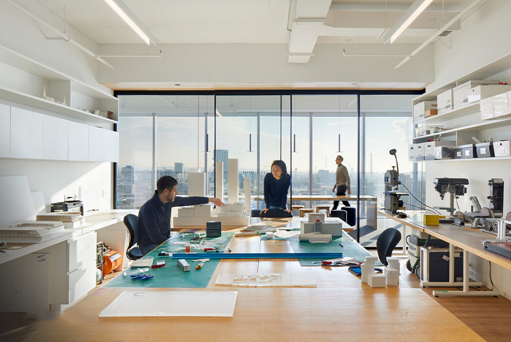
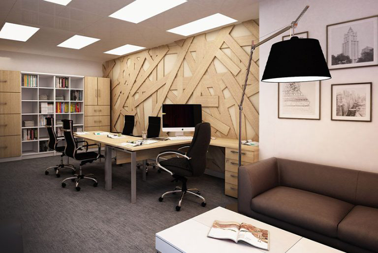
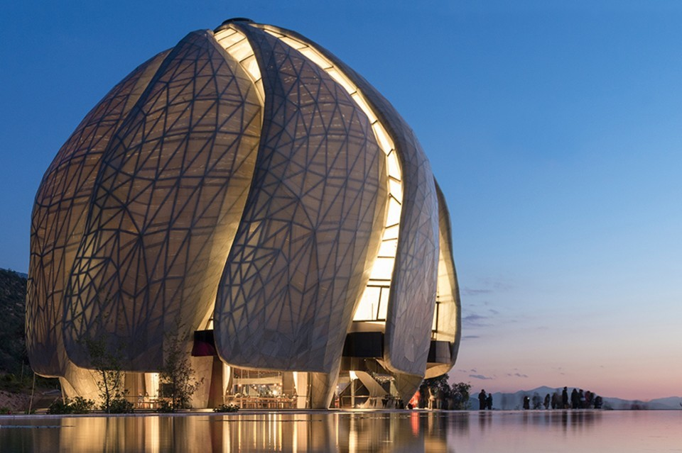

1 / 8
2 / 8
3 / 8
4 / 8
5 / 8

6 / 8

7 / 8

8 / 8


''Mimar olmak, mekâna değer katmak demektir'' Bina yapmak mimarlık değildir.
"Mimarlık için mekâna değer katmak gerekir. Yaptığım işlerden ben değil, içinde yaşayanlar hoşlanmalı. İnsanlar her gün gördükleri ve yaşadıkları mekânları sevmelidirler."
Mimarlık mesleği alt dalları hakkında bilgi sahibi olmak isteyenler binaları ve diğer fiziki yapıları inşa etme görevini üstlenen mimarların sektörel bazda uzmanlaştığı alanları merak eder. Mimarlar kendi içlerinde 8’e ayrılır. Politik mimar, aydınlatma mimarı, araştırma mimarı, restorasyon mimarı, şehir plancısı ve peyzaj mimarı olmak üzere farklı mimari türleri üzerinde yoğunlaşan mimarlar, iletişim yetenekleri ve takım oluşturma becerileri ile yaşam alanlarınızın kritik dengesini korurlar.
Cafe restoran iç mekan tasarımları mekanın konseptine ve geçirilen zamana uyumlu bir şekilde tasarlanmalıdır. Bunun nedeni ise bu alanların genellikle sosyalleşme alanları olmasından kaynaklanmaktadır. Bu açıdan bu mekanlar, dikkat çekici bir tasarıma sahip olmalıdır. Müşteri psikolojisine hakim olabilecek bir iç mimar ile beraber çalışıldığı takdirde ise etkili ve işlevsel alanlar yaratılmaktadır.

Bodrum açıklıkları, giren ışık miktarını optimize etmek için cepheden dışa doğru hafifçe çıkıntı yaparken, zemin katta bahçe ve ormanla bağlantı duygusunu artıran çerçevesiz pencereler ve sürgülü kapılar kullanılmış. Yatak odalarının bulunduğu üst kattaki pencereler, mahremiyeti korumak ve ek gölgeleme ekipmanı ihtiyacını ortadan kaldırmak için daha küçük boyda tasarlanmış.